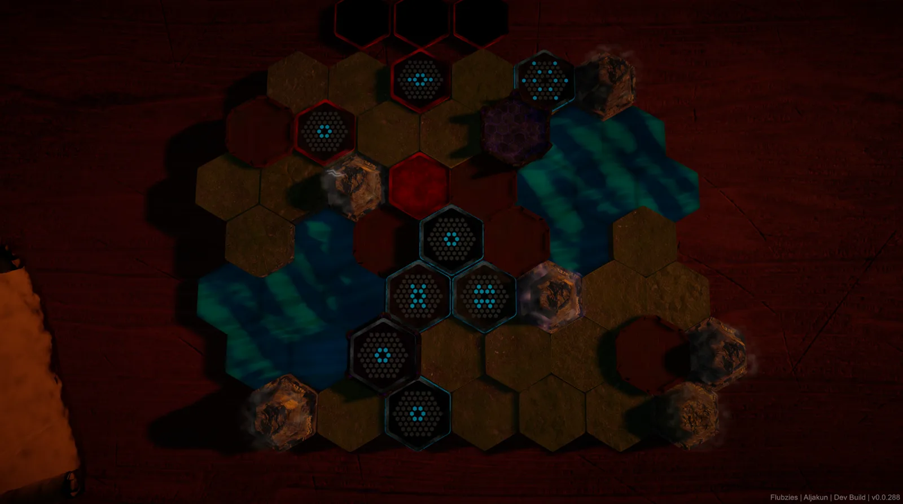
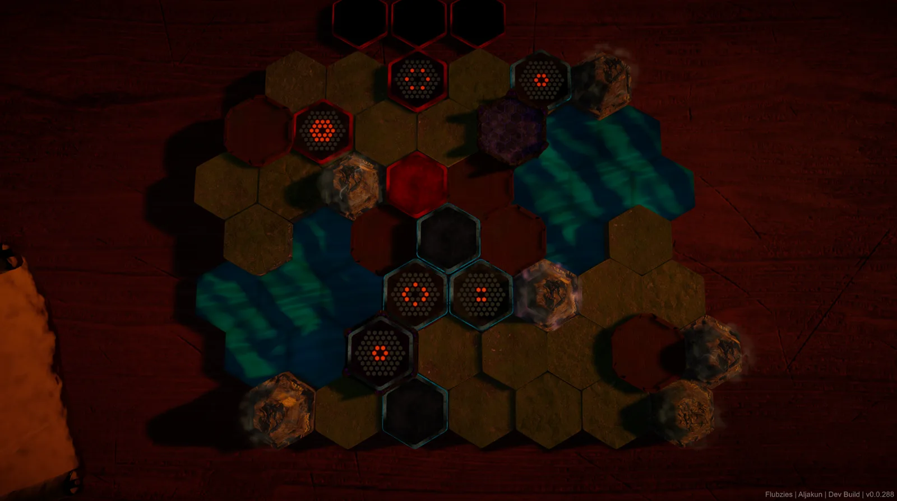
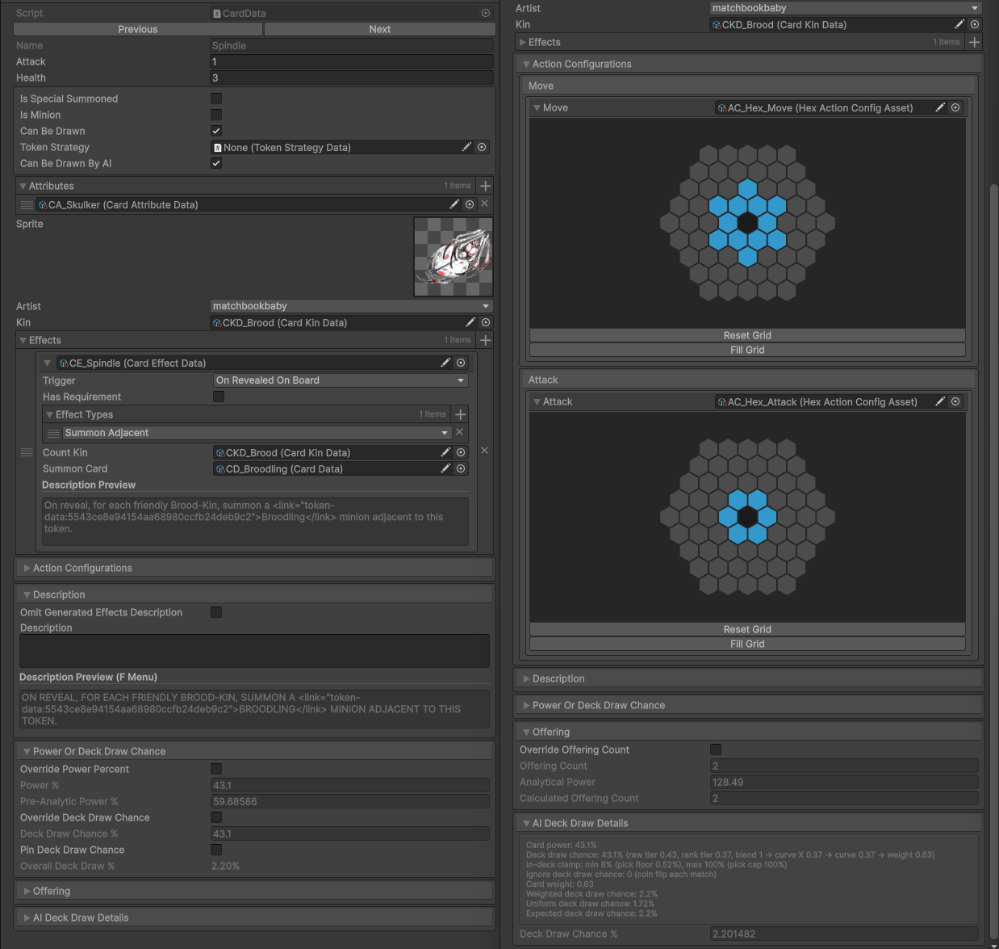
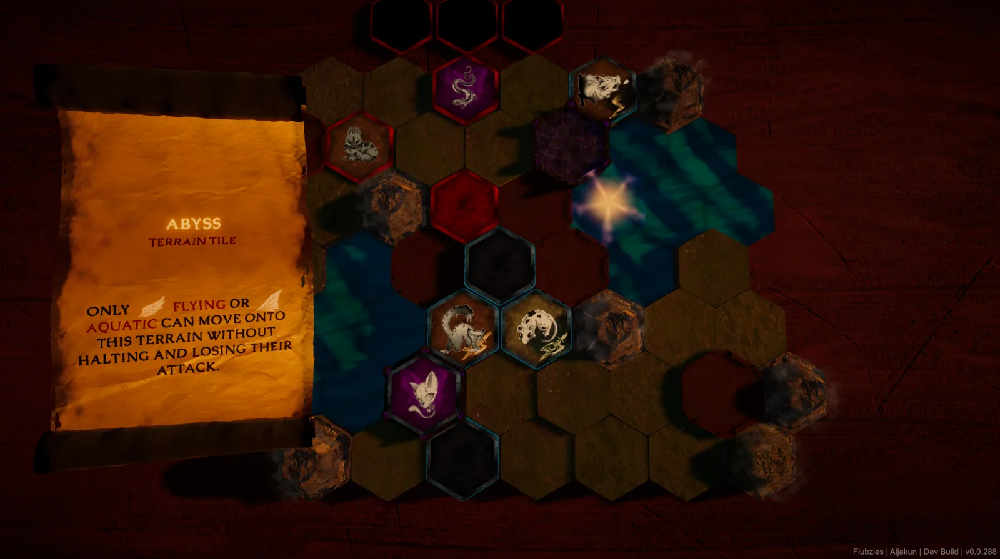
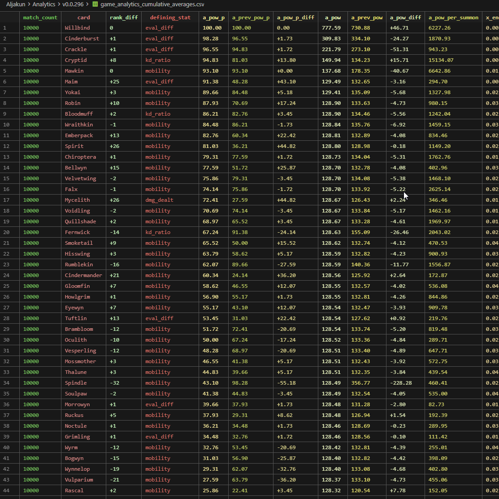
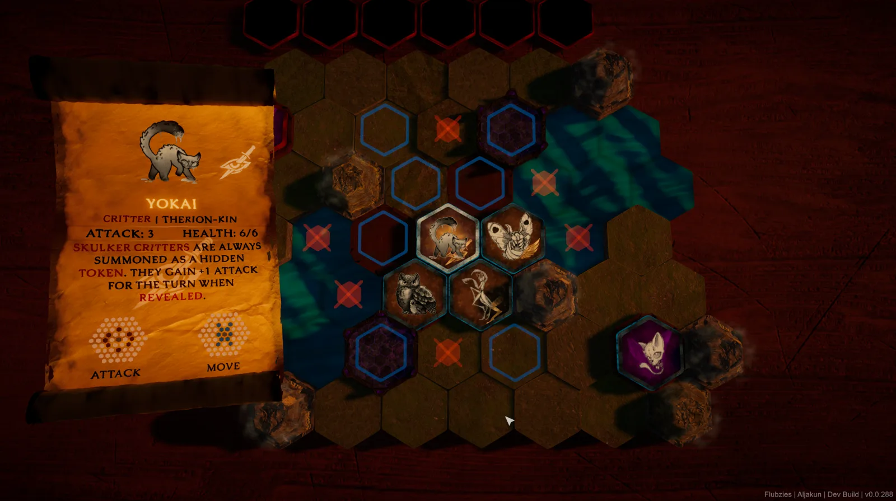

A live feed of the most recent commits to Aljakun’s codebase, pulled straight from the repository, so you can see what I’m actively working on right now.
Loading recent activity…
Aljakun is a hex-grid, deck-based tactics game I’m building solo in Unity (C#), with the bulk of the engineering landing in the last five months of active development on top of an eighteen-month history. Beyond gameplay content, it’s a testbed for systems built from scratch: a heuristic beam-search AI opponent, a self-play analytics pipeline that drives card balancing from real match data, procedural map and hex-grid generation, and a fair amount of custom editor and debugging tooling.
I’m building Aljakun solo, acting as programmer, systems designer, and (out of necessity) AI researcher. It’s the project I use to build things properly from scratch rather than reach for a plugin: a hand-rolled search-based AI, procedural generation with a deterministic seed, and a balancing pipeline driven by real simulated match data instead of gut feel.
I also built, and later retired, a full imitation-learning AI pipeline: state encoding, ONNX inference, an external training loop. It’s documented below alongside everything that shipped, since cutting a system you’ve invested months in is its own kind of engineering judgment, not just a footnote.
Aljakun is a single-player tactics battle wrapped in a roguelike run: two controllers, a player and an AI, on a shared hex board, with tokens that move and attack under imperfect information. Each match is meant to read as a small, solvable puzzle rather than a stat-trading slog, closer to Into the Breach’s “solve the board” tactics than Hearthstone’s combat math, with a genre neighborhood that also includes Inscryption, Slay the Spire, Blue Prince, and the old Yu-Gi-Oh! board spin-offs.
Each side commands tokens on the hex grid to defeat the enemy Keeper. Positioning is the game: tokens are placed and moved deliberately, and the board itself (terrain tiles, hazards, snares) is as much a piece to read as the tokens are. Every critter token has its own move-set and attack-set, so knowing the shape of a token’s reach before you commit to a placement matters as much as its stats. The AI plays under the same rules as the player for the most part, with a few extra buffs (better deck synergies, stronger tokens) that scale in as a run progresses to keep it challenging.


The AI is a from-scratch decision engine (~8,800 lines across 35 files), built as a best-first beam search over sequences of actions within a single turn rather than a classic minimax tree. Each turn it generates every legal action, expands a priority-ordered frontier capped by beam width and branching factor, under a time budget and a hard node cap, then commits to the best sequence found.
A few pieces push it past a textbook beam search:
The evaluator is a hand-tuned scoring function: material value, discounted hand-card value, per-unit exposure/threat penalties, win-condition-tile proximity, and a dynamic aggression curve based on how far ahead or behind the AI is. Supporting utilities add game-specific awareness: threat propagation along movement paths, danger from hidden pieces, terrain-conversion decisions, and a watchdog that recovers from turns that stall.
Before landing on the heuristic search above, I built and iterated on a full imitation-learning AI pipeline over several months, tracked through versioned commits, and eventually cut it once the heuristic search proved faster, more controllable, and simply stronger.
What it actually did:
This was a real, working system with a genuine train/infer/deploy loop, not a prototype that never ran. What beat it wasn’t a lack of effort but the tradeoffs of the approach: the heuristic search was faster to iterate on, easier to debug (every decision traces back to a readable score breakdown instead of a black box), and stronger in head-to-head testing. I pulled the ML runtime, the Sentis dependency, and the training tooling in one commit, and the self-play infrastructure it left behind got repurposed for the balancing pipeline below, so the experiment’s most reusable part survived even though the model didn’t.
The run deck is a persistent list of card data plus a parallel per-card list of “embues” (stacking buffs picked up mid-run). Cards are either static ScriptableObject assets or runtime-instantiated clones (needed when a card is duplicated or modified in a fight), and the deck is snapshotted at the start of each fight so clones are discarded and the deck reverts cleanly on a loss or retry, without touching the shared source assets.

One edge case worth calling out: a “Keeper Substitution” event lets a Keeper (a special win-condition unit) legitimately sit inside the drawable run deck between fights, but it must never come up as a normal draw. Getting that right needed dedicated draw-index logic that skips Keeper-flagged cards, now pinned down by two regression tests guarding against that bug class.
An “embue” is the run’s main deckbuilding lever: sacrifice a token to grant another token its attack-set, move-set, and highest resource cost. It reads as a simple combine-two-cards event on screen, but it’s doing real work underneath, swapping out the same move-set/attack-set data the AI search and battle-grid system query, so an embued token behaves identically to a native one in every system downstream rather than needing special-cased handling.
Every critter belongs to a “kin” (Avian-kin, Grub-kin, Grim-kin, Fae-kin, Briar-kin, Brood-kin, Therion-kin, or Kinless), which groups the roster for draft pools and synergy reads without constraining move-sets to a theme. The full roster is hand-drawn:
Creature and card art by Matchbookbaby and Kaiju_Tattoos.
Two separate procedural systems, built for different purposes:
In the shipped node set that’s Rest, Exchange, Fight, Path, Embue, and Mirror nodes, each reachable from the row below through however many lanes the generator drew, with unvisited nodes fogged out until a connecting path is revealed. Between Fights the deck evolves through whichever of those nodes a run visits, so a late-run Match is played with a meaningfully different deck than the one the run started with, not just a harder copy of it.

Terrain layouts are hand-painted in a custom editor tool rather than placed tile-by-tile in the scene: hotkeys assign a terrain type (Ground, Wall, Air, Abyss, Thicket, Bridge, Lava, Keep, Ritual) to a hex under the cursor directly over the layout data asset the battle-grid system reads at runtime.
These are the two largest gameplay systems in the codebase by line count, and both the map layout and the battle board get queried heavily by the AI search above.
Outside the table itself, the plan is to let the player step away from the board to explore a physical space, working title Mausoleum or Cathedral, not finalized, in the spirit of Blue Prince’s mansion or Inscryption’s cabin. It would hold clues and puzzles that unlock new tokens, giving meta-progression a second, non-battle mode of play instead of leaving all discovery to random map events. This is genuinely early: shape, pacing, and how it interleaves with the map are all still open, and the models for it are still pending.
This is the piece of the ML era that survived. During self-play matches, a static analytics system records about 20 per-card metrics: damage dealt, kills, times summoned, board presence at a win, eval-swing per decision, and more, merging them into a cumulative dataset across thousands of auto-restarted headless matches, gated behind a minimum-match-count threshold before results are trusted.

Brand-new cards without enough data fall back to a heuristic estimate (attack/health/mobility-based) so they aren’t ranked on statistical noise. The loop (headless self-play, CSV accumulation, reload, rebake) is the same self-play infrastructure the ML pipeline used, repointed at a simpler, more durable goal.
The rebake lands in an editor window that lists every card sorted by power percentile alongside its live deck-draw chance, so a balance pass is a scroll through one sorted list rather than hunting through 60 separate assets.
The card-inspector panel is built on Unity UI Toolkit rather than the older uGUI/IMGUI, swapping between two layout trees at runtime depending on card type (one for creatures, one for non-creature cards like snares, runes and terrain) and layering 3D-rendered card art and hex move-range visuals beneath the 2D panel via explicit depth ordering. Animation blends DOTween with UI Toolkit’s own transition system, with hover/attribute interactions and clickable settings links routed through string IDs.
The more distinctive piece is presentation: the panel is a scroll of paper that physically unfurls and rotates in 3D world space, tracking a target pose with safety clamps against runaway transforms and a blended transition between open and closed states rather than a hard cut. Combining screen-space UI Toolkit panels with a 3D-space physical presentation isn’t common; most UI Toolkit work stays purely screen-space, and it’s one of the more visually distinctive pieces of the project.

Aljakun is still in active development and doesn’t have a public build to share just yet. This write-up covers the systems and design as they stand today, with screenshots and clips pulled straight from the current dev build.
A live feed of the most recent commits to Aljakun’s codebase, pulled straight from the repository, so you can see what I’m actively working on right now.
Loading recent activity…